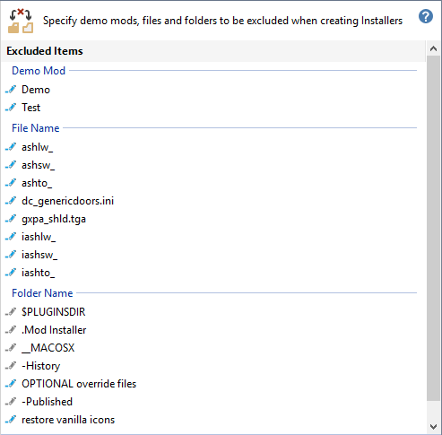
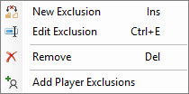
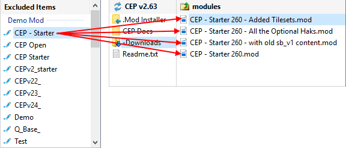
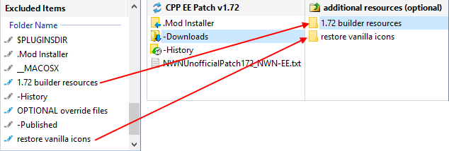

This map defines the Demo Mod text, File Names and Folder Names that are excluded from the source folders and files used to create Mod Installers.

You can use Cut & Paste to copy excluded Mods, files and folders to a Mod Installer. In other words, the exclusions only apply when you use Create Installer from the Manage menu.
You can also use the Installer Wizard Builder to exclude selected Folders and Files for individual Mods.
Click the  Edit Icon, Right-Click, Double-Click or press the Space Bar to access the Map Excludes menu.
Edit Icon, Right-Click, Double-Click or press the Space Bar to access the Map Excludes menu.

|
Demo Mod |
Specifies text match criteria used to identify demonstration modules. This means that any file name, with an extension of .mod containing the text you specify, is excluded from the Mod Installer. For example, specifying CEP - Starter as the Demo Mod text, excludes all files containing the text from the Mod Installer.  |
|
File Name |
Specifies file names and text match criteria to identify files that must be excluded from Mod Installer. File text match criteria is defined as any file name you specify that does not have an extension name. The Installer Tool excludes any file that starts with the file text match criteria or matches the Exclude file name. |
|
Folder Name |
Defines specific folder names to exclude from Mod Installers. You can exclude an archive's sub-folders by prefixing the folder name with the archive's file name (eg LunaC_H20rat1046659907790Drider_v1.5.zip\Alternate Animation Sets). For example, the 1.72 builder resources and restore vanilla icons folders are excluded from the Mod Installer.  |
Work with the Excludes map
Use the Installer Wizard Builder